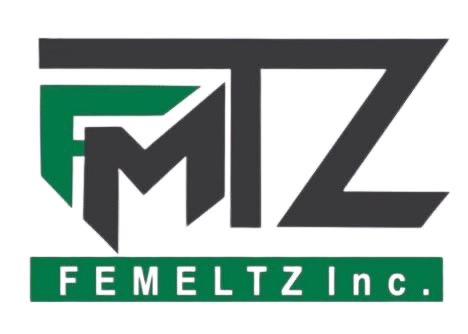
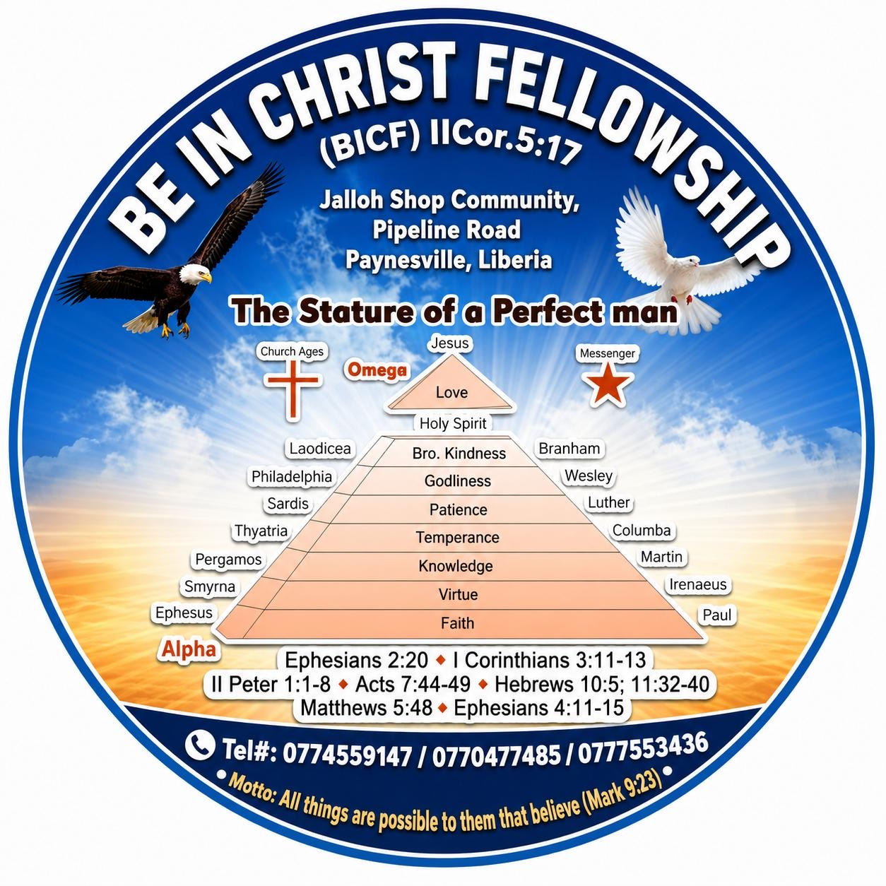
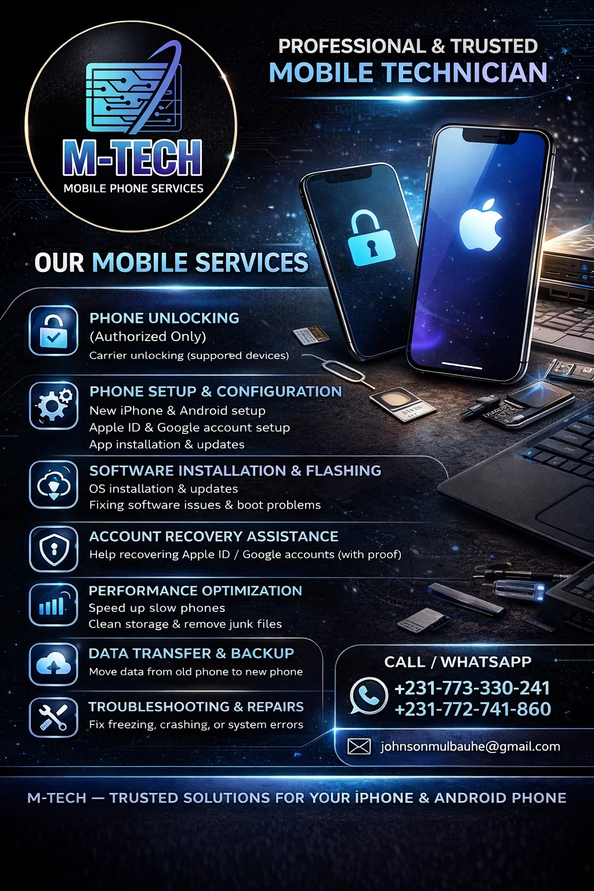
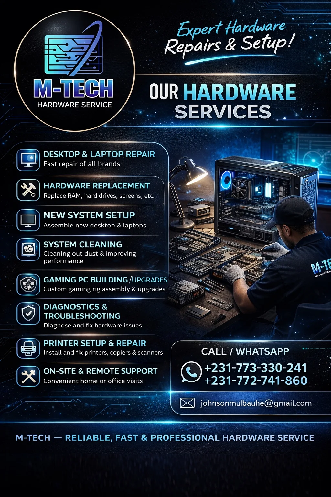
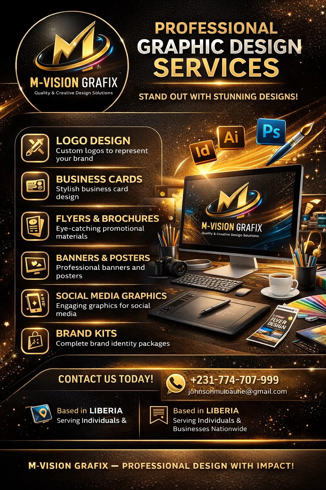
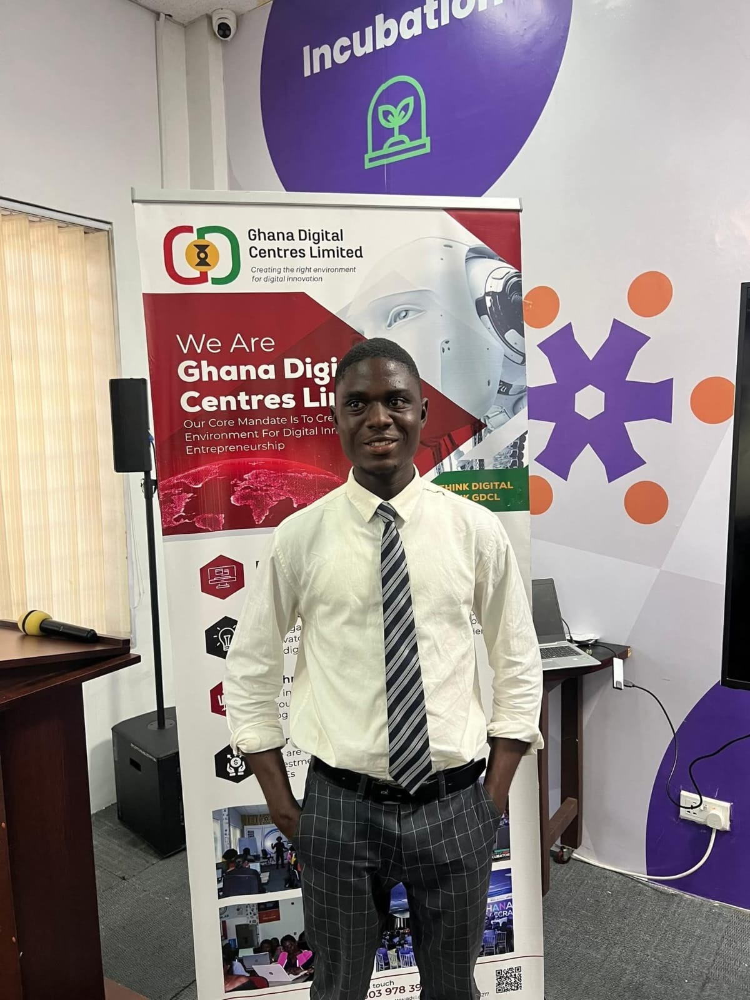

Our Mission
Bridge the digital gap with practical, dependable technology solutions that help people and organizations perform better.
Welcome to
Technology is our Passion, Education is our Life
“With God We Build Solutions”
Professional technology solutions across LiberiaTechnology is our Passion, Education is our Life
M-TECH delivers professional IT support, hardware repair, networking, mobile technology assistance, digital systems and creative services for individuals, businesses and organizations across Liberia.

FEMELTZ Inc.
BICFM-TECH is a Liberian-based technology solutions company founded and led by Mulbah E. Johnson. We provide reliable, professional and affordable IT services to individuals, businesses, institutions and organizations across Liberia.
M-TECH specializes in hardware repair, software installation, networking, system maintenance, graphic design and general IT support. Our mission is to help bridge the digital gap by delivering practical technology solutions that improve efficiency, productivity and innovation.
We are committed to quality, professionalism and customer satisfaction, ensuring that every client receives dependable service tailored to their needs.
Bridge the digital gap with practical, dependable technology solutions that help people and organizations perform better.
Hardware, software, networking, system maintenance, IT support, training and creative design under one trusted brand.
Quality workmanship, professional service and solutions tailored to each client’s real needs.
M-TECH combines technical service, continuous learning and responsible innovation to help people and organizations use technology with greater confidence.
We aim to deliver innovative, affordable and reliable technology services that transform businesses, empower communities and expand access to practical digital solutions.
We serve businesses, individuals and communities with excellence, integrity, practical education and a God-fearing commitment to responsible service.
We uphold honesty, transparency and responsible practice in all operations.
We use relevant modern technology and continuous learning to create practical solutions.
Our clients are a priority; we listen carefully and tailor service to their real needs.
We are guided by faith, ethical values and respect for the people we serve.
We strive for quality, professionalism and dependable results in every service.
We believe in teamwork, partnerships and sharing knowledge to build better solutions.
From a slow laptop to a growing office network, M-TECH combines technical skill with practical support designed for everyday users and businesses.
Computer setup, software support, networking, security, backup, help desk, IT management and training.
View all IT capabilities →Phone setup, authorized unlocking, software installation, data transfer, performance tuning and troubleshooting.
View mobile services →Desktop, laptop, printer and component diagnostics, repair, replacement, cleaning and custom system builds.
View hardware services →Professional logos, business cards, flyers, brochures, banners, social media graphics and brand kits.
View design services →We combined M-TECH’s full service profile into clear service areas so clients can quickly find the support they need. Availability may depend on the device, platform, infrastructure and project requirements.
We help keep your technology running so you can focus on work, school, customers and business growth.

Setup, optimization, recovery assistance and troubleshooting—handled with care and a focus on legitimate device ownership.

We diagnose the issue first, explain the recommended solution and help you choose a practical repair or upgrade path.

Through M-TECH Creative Services, we support entrepreneurs, organizations and businesses with professional visual communication for print and digital use.
Request a design project →Technology should make life easier. Our approach is practical, transparent and focused on the result you need.
We identify the problem and explain it in understandable terms before recommending the next step.
We focus on useful, cost-conscious solutions instead of unnecessary upgrades or complicated advice.
Account recovery and unlocking assistance is provided only for legitimate, authorized situations.
From one device to office support, M-TECH is structured to serve both individuals and organizations.
Call, WhatsApp or email us with the device or service you need.
We gather the details and determine the appropriate next step.
Repair, setup, support or design work is carried out professionally.
We explain what was done and give practical after-service advice.
This portfolio combines M-TECH client work, technical projects, hands-on practice, and professional training experiences. Each item is clearly labeled so visitors can understand whether they are viewing client work, M-TECH technical work, authorized device support, development work, or training attended by M-TECH.
Have a similar project or technology problem?
Need a Similar Service? ↗M-TECH has earned the confidence of organizations operating in different sectors by delivering practical, dependable technology solutions. From IT support and database systems to networking, digital design and business technology assistance, these client relationships reflect our ability to understand real operational needs and turn technology into useful results.
Each profile below represents an organization M-TECH has served with one or more technology solutions. Together, they demonstrate practical experience across business, faith-based, manufacturing and creative-service environments.
M-TECH has supported FEMELTZ Inc. with practical business technology, including IT assistance, digital design, database and management-system solutions that support day-to-day operations and better information management.
M-TECH has provided BICF with digital and technology support for organizational communication, creative materials and practical IT needs, helping present information more clearly and support church activities with dependable technical assistance.
M-TECH has delivered business technology support for ZEELARLOR, including database and management-system solutions, operational digital support, creative design and practical IT assistance for a growing production environment.
M-TECH Creative Services has supported Lomel’s Cake and Pastry with branding, promotional graphics and digital assistance designed to strengthen visual identity, improve customer-facing communication and support business promotion.
Our portfolio shows actual client work, technical projects, training experiences and hands-on technology activity.
We explain the problem, recommended solution and next step in understandable terms before proceeding.
Protected accounts and devices are handled only through legitimate, authorized support and recovery workflows.
Clients receive practical guidance on what was done and how to reduce the chance of the same problem returning.
These client relationships are part of M-TECH’s testimonial and trust record because they reflect technology work actually carried out for real organizations. They show our experience serving different operational needs while maintaining a consistent standard of professionalism, practical problem-solving and client-focused support.
Whether the assignment is a small design task, a device or network problem, or a business management system, M-TECH approaches each engagement with the same goal: understand the need, recommend the right solution, deliver responsibly and support the client after the work is completed.
Send your feedback directly to us. The form below does not publish anything automatically; it simply prepares your testimonial for WhatsApp so M-TECH can review it and ask for approval before adding it to the website.
Technology jobs are rarely identical. M-TECH provides a clear quotation after understanding the scope, device condition, number of users or systems, location, required parts or software, urgency and expected outcome.
Best when you know you need technology help but are not yet sure which service or solution is right.
Practical support for personal computers, phones, software, backups, setup and everyday technology problems.
Structured technology support for offices, businesses, institutions and organizations that rely on dependable systems.
Technology learning for individuals, groups, schools, teams and organizations at an appropriate skill level.
Professional visual and digital support for businesses and organizations that need a stronger public presence.
For larger or specialized needs that require planning, several services or a solution designed around the client’s workflow.
Final pricing may vary according to service complexity, parts or licenses required, quantity of devices or users, travel or on-site requirements, urgency, project duration and any third-party costs. M-TECH explains the quotation before the client approves the work.
M-TECH keeps the process simple: understand the need, explain the options, agree on the scope and quotation, then proceed with the client’s approval.
Bring the device, relevant charger/accessories and a clear description of the problem.
Share your goal, users, current setup, budget expectations and preferred timeline.
Tell us the audience, topic or design purpose, size/format and expected delivery date.
Use the website service-request form, WhatsApp, phone or email. Tell us what you need, the device or project involved, your location and any deadline. M-TECH will review the scope and explain the next step before work begins.
Turnaround depends on the problem, device condition, parts or software required, project size and current workload. M-TECH will provide a practical estimate after assessment. Urgent requests can be discussed, subject to availability.
Yes, where the service is suitable. On-site support depends on location and scheduling, and travel may affect the quotation. Remote support is used only when appropriate and with the client’s authorization.
Back up important files where possible, bring any relevant charger or accessory, and explain the symptoms clearly. If the service involves a protected or account-locked device, bring proof of ownership and the account information needed for legitimate recovery or activation support.
M-TECH provides authorized diagnostics, restore, software installation, activation assistance, recovery support and supported carrier/device services. We do not bypass ownership or security protections. Proof of ownership may be required.
We can assess recoverable data and recommend the safest available option. Recovery is not guaranteed because success depends on the device, storage condition and previous damage or overwriting. Whenever possible, maintain a current backup before problems occur.
The website service forms do not store submitted information; they prepare a message for WhatsApp. For technical work, M-TECH aims to access only what is necessary for the approved service. Clients should back up data and remove highly sensitive information when it is not needed for the job.
Yes, when replacement or upgrade is appropriate. M-TECH will explain the recommended part, expected benefit and cost before installation. Availability, quality level and any third-party warranty depend on the specific part or supplier.
M-TECH provides after-service guidance and will explain any service-specific support period that applies. If a warranty or defined support period is included for a particular job or part, it should be stated in the quotation or service agreement before approval.
Yes. M-TECH offers basic website development, database/management-system projects and practical software solutions based on the client’s needs. Larger or specialized projects are assessed first and may be divided into phases.
Yes. Training can be arranged for individuals, small groups, schools, teams and organizations. Topics may include basic computer skills, devices, digital literacy and other practical IT subjects agreed in advance.
Prices are based on the actual scope of work rather than one fixed public price. The quotation may consider complexity, parts, software/licenses, travel, number of devices/users and urgency. Any deposit, payment stage or final-payment requirement is confirmed with the client before work begins.
M-TECH is led with a commitment to professional technology service, continuous learning, innovation and responsible growth.
Work with our team ↘CEO & Founder
As Founder and CEO, Mulbah E. Johnson provides the strategic direction behind M-TECH—combining technology, education, service and innovation to build practical solutions for individuals, businesses and organizations.
“With God We Build Solutions”
Technology is our Passion, Education is our Life
Creative Technical Director (I.T)
Supporting M-TECH’s technical and creative direction through practical IT expertise, problem-solving and client-focused technology service.

Chief Cyber Security Expert
Leading M-TECH’s cyber security expertise with a focus on safer systems, responsible digital protection, risk awareness and security guidance for individuals, businesses and organizations.
Professional profile photo can be added later without changing the card layout.
Choose the fastest way to reach M-TECH. Whether you need urgent technical help, a quotation, or guidance on a new technology project, we make the first contact simple.
Send a direct message and describe the support or project you need.
Speak directly with us for service enquiries and technical assistance.
Tell us what you need and prepare a structured WhatsApp request in seconds.
Use email for detailed requests, documents, quotations or business enquiries.
Serving individuals, businesses and organizations across Liberia. M-TECH focuses on clear communication, practical solutions and professional support.
Tell us what you need and we’ll help you identify the right next step.